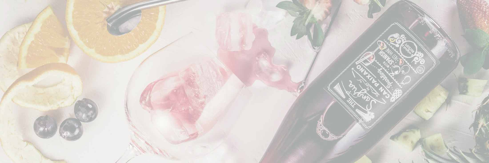

Here comes the true: wine is not supposed to be simple
But don’t panic! It does not mean that we cannot get a way on that. The complexity of flavours inside each bottle of wine is actually what makes it so incredible and unique. All over the world, we have people really passionated about wine and its harmonization with food. This passion is moved by the infinite possibilities of compositions that are to be done, like chords of a beautiful symphony.
Spicy Wine will help you to go straight to the right road on this field, sparing you from long readings about terroir in lands far away from fun. The intention here is present techniques and just the necessary information for simple — but delicious — harmonizations. Also, here you will find uncomplicated content about the wine itself and a whole section dedicated to food.
Don’t forget to load yourself with a glass of merlot before dive into this reading. Enjoy it!
Types of Wines
Wines are divided in three broad categories, being white, rosé and red.
-
White
A mild wine that goes well with delicate dishes such as salads, fishes, and seafood. Curiously, the white wine can be produced from white or red grapes. It just requires to be fermented separately from grapes skin, once this is what convey the colour and taste to red wines.
-
Rosé
In the past, rosés were produced by mixing red and white wines in equal proportions. This method is not much used today. Instead, the wine is exposed to red grapes skin for a while during the fermentation, just enough to let it absorb some tannins — but less than a red wine.
-
Red
The most strong type among wines, the red one can achieve many distinctive levels of flavours. Into this category, you can find since smooth until full bodies wines. They are produced only by red grapes and are exposed to the grape skin during the whole fermentation process.
Narrowing down these classifications, we have some more types that appear with their particularities, such as harmonization, notes, ideal temperature, and appropriated glass.
-
Sparkling Wine
Flavour intensity: Delicate (1)
Notes / Body: fruity, fresh, creamy.
Serving temperature: 8°-10°C
Harmonization: caviar, greek salad, citric desserts.
-
White Wine
Flavour intensity: Mild (2)
Notes / Body: fruity, citric, floral, light.
Serving temperature: 10°-12°C
Harmonization: grilled chicken, aioli pasta, tuna salad.
-
Rosé Wine
Flavour intensity: Medium (3)
Notes / Body: floral, light dry.
Serving temperature: 10°-14°C
Harmonization: shrimps, lobster thermidor.
-
Red Wine
Flavour intensity: Complex (4)
Notes / Body: woody, nutty, full bodied
Serving temperature: 14°-18°C
Harmonization: roasted meet, coq au vin.
-
Dessert Wine
Flavour intensity: Sweet (5)
Notes / Body: perfumed, dense, alcoholic
Serving temperature: 14°-18°C
Harmonization: chocolat, creamy desserts.
Curiosities
- Champagne and sparkling wine are not synonymous. Any Champagne is, in fact, a sparkling wine, but it receives this denomination only when is produced in Champagne — a French territory. It needs to follows a specific production method and uses local grapes to be considered one.
- Not any red wine can be harmonized with cheese. The pigment of the red wine comes from the tannins, a substance present in the red grape skin. Usually, tannins are not a good match for fat, which is abundant on the majority of hard cheeses.
- The green wine is actually classified as white wine and not a separated category, like some people believe. Its differentiation is in the fact that it’s made out of grapes which didn’t reach the complete maturation yet.